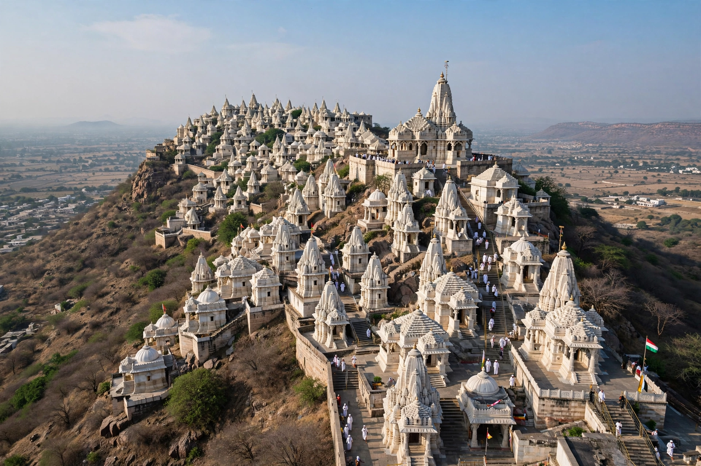

| Palitana | |
|---|---|
| State | Gujarat, India |
| District | Bhavnagar |
| Known for | Shatrunjaya Jain temples |

Palitana is a city in Bhavnagar district, Gujarat, India, best known as the gateway to the Shatrunjaya hill, one of Jainism's holiest pilgrimage sites, crowned by hundreds of marble temples.
Some 863 temples climb the twin peaks of Shatrunjaya, built over 900 years from the 11th century onward and dedicated principally to Rishabhanatha, the first Tirthankara. Pilgrims ascend about 3,800 stone steps. Eating is forbidden on the hill, and pilgrims descend before nightfall, as no one — not even priests — may stay overnight.
Palitana was the capital of a princely state founded in the 12th century and ruled by the Gohil Rajputs until its merger into India in 1948. In 2014 the city was reported to have legally adopted vegetarianism, banning meat and egg sales in respect of Jain sentiment.